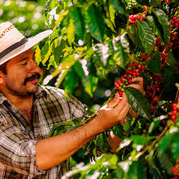

Café 100% mexicano
Con amor cultivamos café de la más alta calidad, directo de la tierra para ofrecerte un producto fresco y lleno de sabor. Desde 1991.
¿Quiénes somos?
Somos una empresa apasionada por el café, comprometida con la calidad y el comercio justo. Desde nuestros inicios, hemos trabajado con caficultores locales para llevar a tu taza el mejor café mexicano, cultivado de manera sostenible y con los más altos estándares de sabor y aroma.
Creemos en el poder del café para conectar personas, inspirar momentos y crear historias. Nuestro equipo está dedicado a seleccionar los mejores granos y procesarlos con cuidado, asegurando una experiencia única en cada sorbo.
